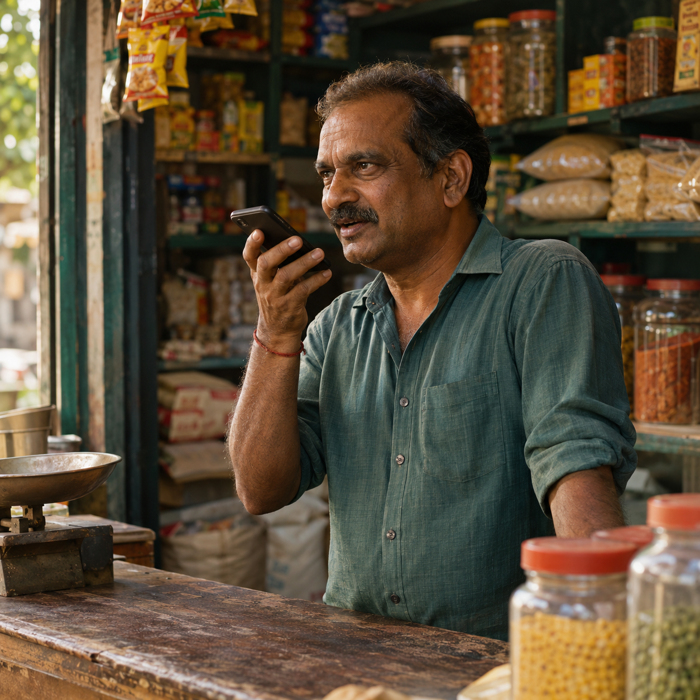

Tell Bolo what you want to get done in a WhatsApp voice note.
The idea behind Bolo is that you can bring any task you have in mind to one WhatsApp assistant. You decide what the job is, who’s involved and which decisions need your approval. As the work changes, you keep talking to the same contact.
Today you can ask, “Who can cover Saturday’s shift?” and get a tally, tell Bolo which students were absent, or turn a supplier’s prices into a quotation for approval. You can switch features on or off and teach rules by voice.
Read the kirana example
Our first test case is a kirana shopkeeper.
The shopkeeper records ₹450 in Ramesh’s khata. Ramesh gets the entry and replies, “Wait, it was ₹350.”
Now there are two amounts in the chat. Which one goes in the book?
Bolo takes Ramesh’s reply back to the shopkeeper and asks, “Keep ₹450 or change it to ₹350?” The shopkeeper can listen to the original voice note before choosing. If they approve ₹350, Bolo updates the khata and keeps the old entry so anyone checking it later can see what changed.
A general chatbot could do this if someone connected it to the shop’s books and set up the rules. With Bolo, the shopkeeper gets the whole process ready to use. The customer can question a charge, and the shopkeeper has the final say.
Because nobody at a shop counter has free hands.
Two sides of the same conversation.
Open both on different screens (or a phone and a laptop). Everything you say on one side shows up on the other.
What changes for the shop?
The conversation happens where people already talk. Its outcome becomes a record both sides can follow.